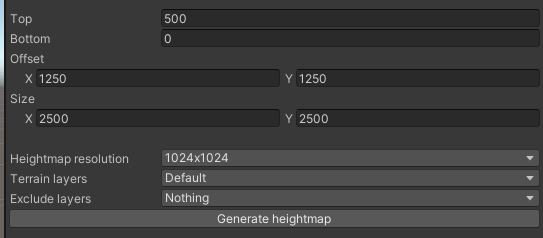

Heightmap generation
Operating principle
- The system creates textures to store elevation and slope data on them.
- Based on the size of the textures, it casts one ray per pixel downwards within the specified boundary.
- If a ray hits a selected layer, sampling is performed.
- If a ray finds an excluded layer, sampling is omitted.
- Using the stored textures, we are then able to place objects in the world based on height and slope.
Parameters

- Resolution: The sampling resolution of the textures. This also influences the raycast count, so big numbers can cause performance issues.
- Terrain layers: Wich layers we want to include in our heightmap.
- Exclude layers: Wich layers we dont want to include in our heightmap.